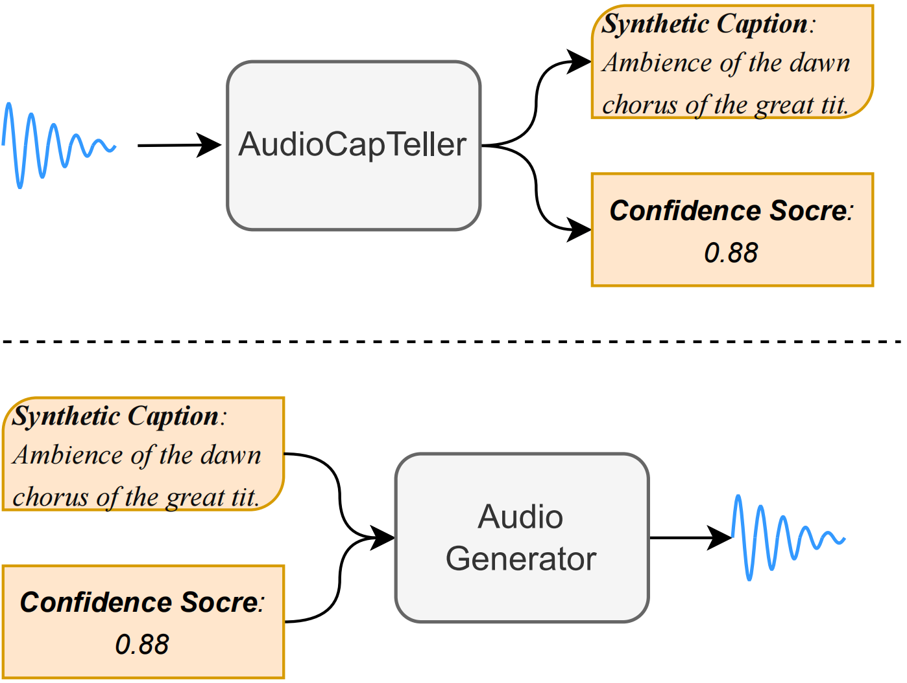

Text-to-Audio (TTA), a burgeoning AIGC application designed to generate audio from natural language description.
Despite growing interest, the development of robust TTA models is hindered by the scarcity of well-labeled data.
Besides, the noisy and inaccurate captions in large-scale, weakly labeled corpora impede the creation of
high-quality TTA models. To address these challenges, we introduce CosyAudio, a novel framework to leverage
confidence scores and synthetic captions to improve audio generation. Specifically, CosyAudio consists of two main
components: AudioCapTeller and an audio generator. AudioCapTeller is capable of generating audio descriptions and
obtaining confidence scores to assess the quality of synthetic captions. After initial training with well-labeled
data, AudioCapTeller's assessment capabilities are leveraged on large-scale datasets to perform high-quality
filtering and reinforcement learning to further improve the capability of AudioCapTeller. Additionally, the
trained AudioCapTeller improves caption quality by automatically generating new captions and
comparing them with original ones. The confidence scores from AudioCapTeller are also integrated into the audio
generator to facilitate quality-aware audio production. Extensive experiments conducted on open-source corpora
demonstrate that CosyAudio achieves more robust performance in automated audio captioning, generates
higher-quality audio, and generalizes well.

Figure 1: Overview of the proposed UniStyle
2. Automated Audio Captioning
We showcase the effectiveness of caption refinement by comparing original and synthetic captions.
Input Audio
Original Caption
Synthetic Caption
Vehicles pass by on an urban street.
sirens blare as footsteps are heard and a car honks.
Waste gases are burning
an aircraft is taking off. there is an aircraft engine in the background.
Sounds are being heard across a band.
some short audio clips that are recorded with a cassette recorder in the office.
Recorded Stereo within a cheap Moto G cellphone.
ambience of the dawn chorus of the great tit.
this sound is a remix of freesounds created by andrew duke, freed, freed.
an eerie bell like sound which can be used for a horror game or for an alien game.
Paisaje sonoro del Campus de la Universidad Europea de Madrid.
me making a little whistling noise on a cheap mic.
3. Audio Generation in AudioCaps
We conduct audio generation in AudioCaps, a homologous test set.
Ground Truth
AudioLDM 2
Make-An-Audio 2
TANGO
TANGO 2
CosyAudio
Text description: A large explosion and a heartbeat, a person speaks.
Text description: Firecrackers popping as a crowd of people cheer and
whistle.
Text description: An engine rumbles loudly, then an air horn honk three
times.
Text description: Thunder and a gentle rain.
Text description: Ocean waves crashing and water splashing as wind
blows into a microphone followed by a man talking.
Text description: A car is passing by with leaves rustling.
4. Audio Generation in MACS
We conduct audio generation in MACS, a non-homologous test set.
Ground Truth
AudioLDM 2
Make-An-Audio 2
TANGO
TANGO 2
CosyAudio
Text description: the sound of approaching footsteps adults talking.
Text description: adults talking and baby crying.
Text description: adults speaking in english their footsteps are heard
and a police siren in the background.
Text description: water falling into a puddle.
Text description: a moped passes by pretty near noises in the
background.
Text description: adults talking while a church bell is rung far away.
5. Seamless Audio Generation from Any Text Input
We conduct zero-shot audio generation, with captions produced by ChatGPT.
Input Caption
CosyAudio
A gentle stream flowing through a forest, with birds chirping in the background.
Crowded subway station with trains arriving and departing, and people hurrying by.
A cozy fireplace crackling in a quiet room, with the sound of a gentle breeze outside.
A soccer match with the crowd cheering and players shouting instructions.
A peaceful night in the countryside with crickets chirping and an owl hooting.
A carnival with laughter, music, and the sounds of rides in the background.